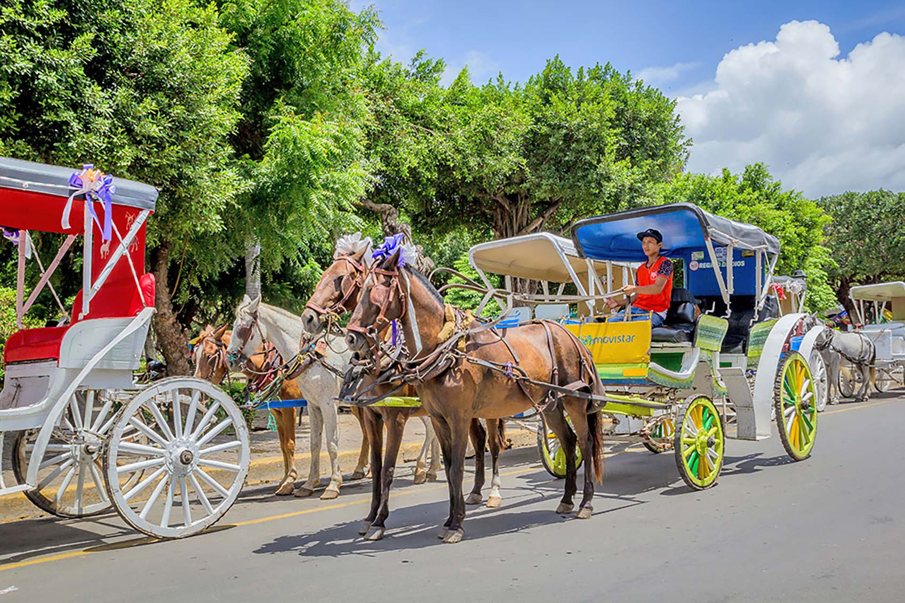
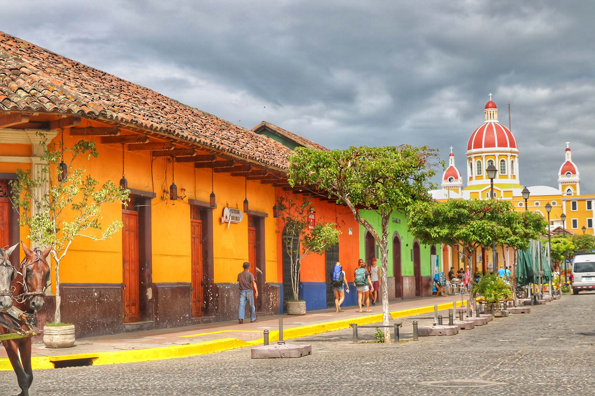
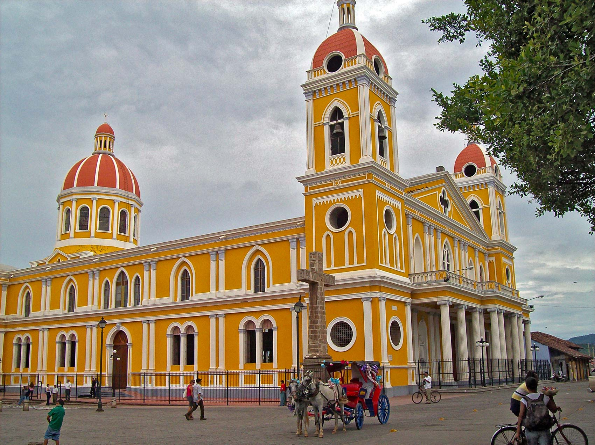
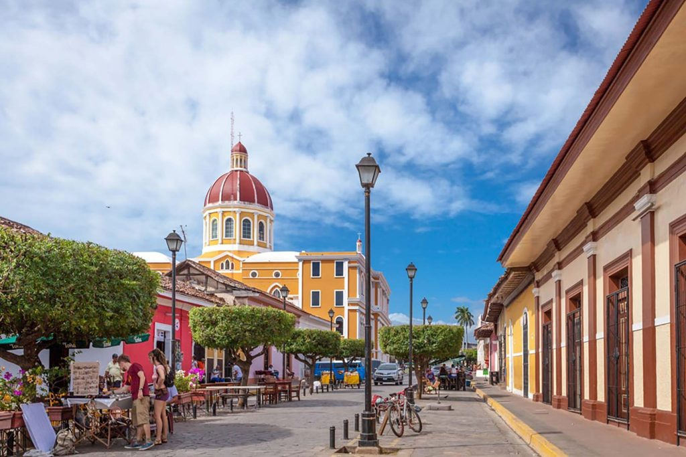

Granada-Nicaragua
Transporte Managua – Hotel - Managua
2 noches de alojamiento
Desayuno por 2 días
Tour Histórico de Granada
Impuestos
100% Satisfacción garantizada
MAPA DE TOUR
Galería





itinerario
Primer Día - ChocoMuseo
El ChocoMuseo, ubicado en una de las calles principales de la ciudad de Granada, es un destino para los amantes del chocolate. A través de una visita al museo, talleres prácticos o un viaje a una finca de cacao - organizados en el local- se explica la historia del chocolate, su proceso de elaboración y de consumo. En este lugar los visitantes saborean el chocolate en su forma más pura, aprenden cómo hacer una barra de chocolate a partir de una semilla de cacao y escuchan la historia de cómo esta semilla se usó primeramente en América Central, para luego llegar a Europa y convertirse en uno de los dulces más populares del mundo. Tour en bote en las isletas de Granada . Recorre aproximadamente 75 isletas, surcando el lago en medio de la naturaleza y las vistas espectaculares, hasta llegar a la Isla de los Monos. Durante el recorrido podrán disfrutar de una vista panorámica del Volcán Mombacho, pasar por las casas de familias nativas que habitan en las isletas, la Fortaleza de San Pablo, restaurantes y casas vacacionales privadas. También observarán la variedad de flora y fauna de la zona.
Segundo Día - Paseo en coche en Granada
Los viajes estándar duran más o menos 30 o 60 minutos. Durante el paseo, pasará por antiguas casas coloniales y otros edificios importantes como el Convento San Francisco o la Iglesia de Guadalupe Museo Antiguo Convento San Francisco El Centro Cultural Convento San Francisco es un museo ubicado contiguo a la antigua Iglesia San Francisco. El museo ofrece una linda colección de objetos históricos, pinturas y estatuas. En algunos salones hay exhibiciones permanentes, mientras otros tienen un tema diferente cada cierto tiempo Fábrica de Cigarros Visitaremos la fábrica de cigarros en Granada